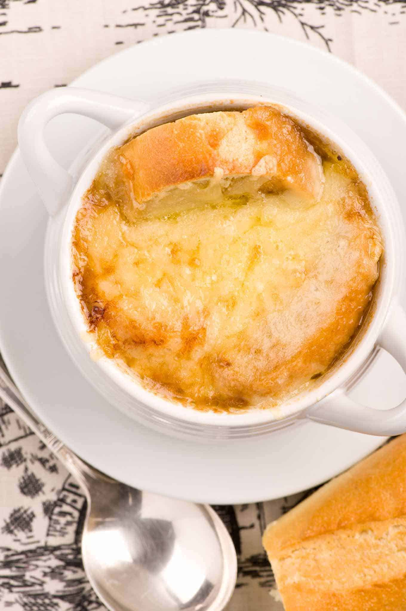

Ingredients
- 4 tablespoons butter
- 4 tablespoons butter
- 2 large sweet onions, thinly sliced
- 1 teaspoon salt
- 1 (48 fluid ounce) can chicken broth
- 1 (14 ounce) can beef broth
- ½ cup red wine
- 1 tablespoon Worcestershire sauce
Directions
- Melt butter in a large pot over medium-high heat. Stir in red onions, sweet onions, and salt. Cook, stirring frequently, until onions are caramelized and almost syrupy, about 35 minutes.
- Stir in chicken broth, beef broth, red wine, and Worcestershire sauce. Bundle parsley, thyme, and bay leaf with kitchen twine; add to the pot. Simmer over medium heat for 20 minutes, stirring occasionally. Remove and discard herb bundle. Reduce heat to low; stir in vinegar and season with salt and pepper. Cover soup and keep warm over low heat while you prepare the toast.
- Set an oven rack about 6 inches from the heat source and preheat the oven's broiler. Arrange bread slices on a baking sheet and broil, turning once, until well toasted on both sides, about 3 minutes. Remove from heat; do not turn off the broiler.
- Arrange 4 large oven-safe bowls or crocks on a rimmed baking sheet. Fill each bowl 2/3 full with hot soup. Top each bowl with 1 slice of toasted bread, 2 slices Gruyère cheese, and 1/4 of the Asiago cheese. Sprinkle a little bit of paprika over the top of each one.
- Cook under the hot broiler until bubbly and golden brown, about 5 minutes. Cheese will cascade over the sides of the crock and form a beautifully melted crusty seal as it melts.
Home